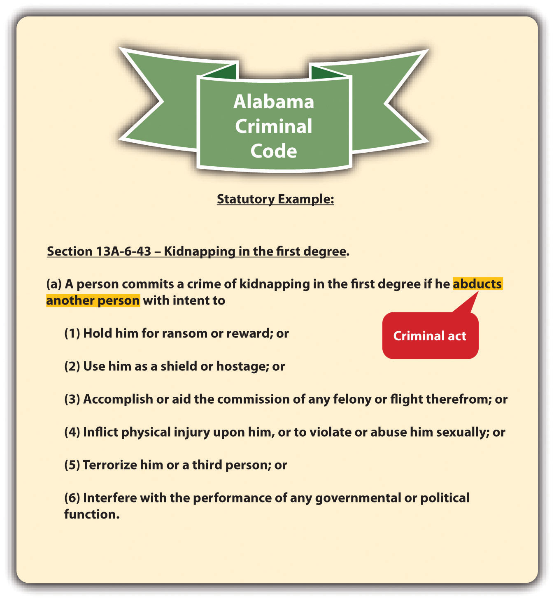
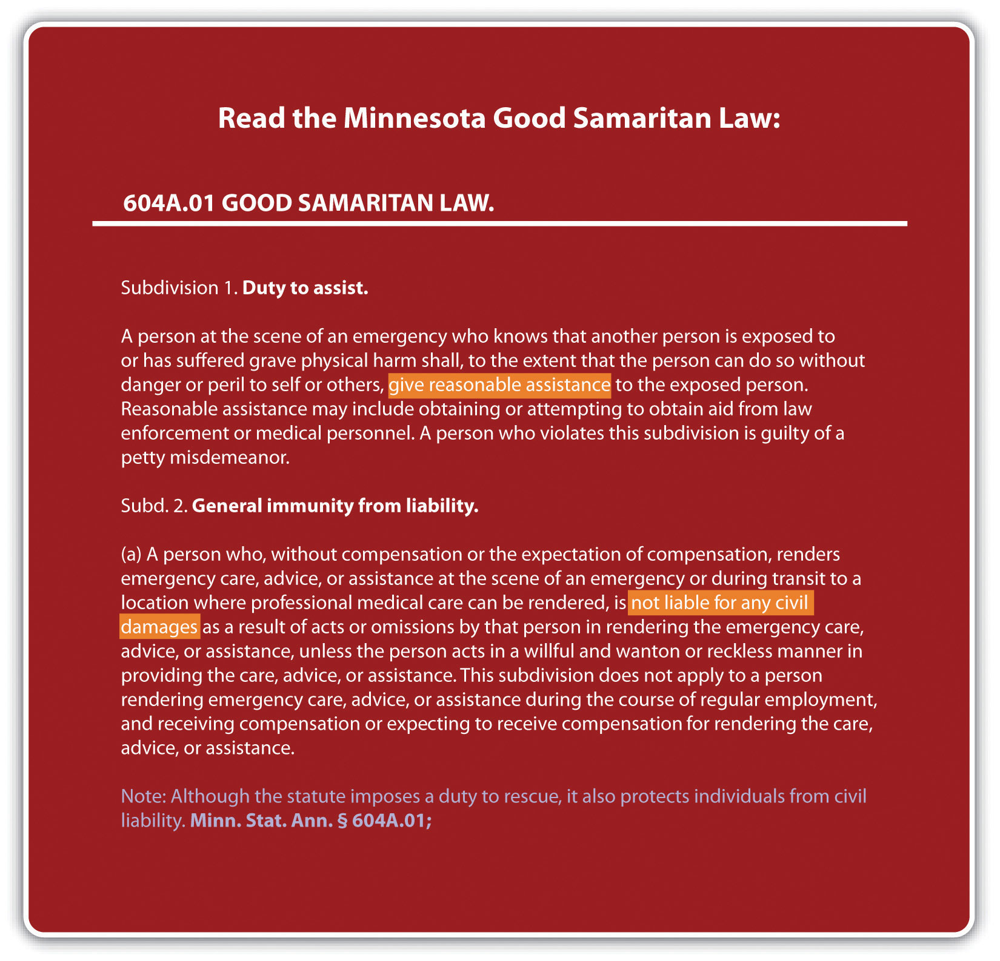

Crimes can be broken down into elementsPart of a crime., which the prosecution must prove beyond a reasonable doubt. Criminal elements are set forth in criminal statutes, or cases in jurisdictions that allow for common-law crimes. With exceptions, every crime has at least three elements: a criminal actThe illegal bodily movement or possession described in a criminal statute, or in a case in jurisdictions that allow common-law crimes., also called actus reus; a criminal intent, also called mens rea; and concurrence of the two. The term conductThe criminal act and its accompanying state of mind. is often used to reflect the criminal act and intent elements. As the Model Penal Code explains, “‘conduct’ means an action or omission and its accompanying state of mind” (Model Penal Code § 1.13(5)).
Figure 4.1 Criminal Code of Georgia

Recall from Chapter 1 "Introduction to Criminal Law" that not all crimes require a bad result. If a crime does require a bad result, the prosecution must also prove the additional elements of causation and harm.
Another requirement of some crimes is attendant circumstancesFactors that must be present when the crime is committed, such as the crime’s methodology, location and setting, or victim characteristics, among others.. Attendant circumstances are specified factors that must be present when the crime is committed. These could include the crime’s methodology, location or setting, and victim characteristics, among others.
This chapter analyzes the elements of every crime. Chapter 7 "Parties to Crime" through Chapter 13 "Crimes against the Government" analyze the elements of specific crimes, using a general overview of most states’ laws, the Model Penal Code, and federal law when appropriate.
Janine gets into a fight with her boyfriend Conrad after the senior prom. She grabs Conrad’s car keys out of his hand, jumps into his car, and locks all the doors. When Conrad strides over to the car, she starts the engine, puts the car into drive, and tries to run him down. It is dark and difficult for Janine to see, so Conrad easily gets out of her way and is unharmed. However, Janine is thereafter arrested and charged with attempted murder. In this case, the prosecution has to prove the elements of criminal act, criminal intent, and concurrence for attempted murder. The prosecution does not have to prove causation or that Conrad was harmed because attempt crimes, including attempted murder, do not have a bad result requirement. Attempt and other incomplete or inchoate crimes are discussed in Chapter 8 "Inchoate Offenses".
Criminal act, or actus reus, is generally defined as an unlawful bodily movement.N.Y. Penal Law § 15.00, accessed October 25, 2010, http://law.onecle.com/new-york/penal/PEN015.00_15.00.html. The criminal statute, or case in jurisdictions that allow common-law crimes, describes the criminal act element.
Figure 4.2 Alabama Criminal Code
One requirement of criminal act is that the defendant perform it voluntarily. In other words, the defendant must control the act. It would not serve the policy of specific deterrence to punish the defendant for irrepressible acts. The Model Penal Code gives the following examples of acts that are not voluntary and, therefore, not criminal: reflexes, convulsions, bodily movements during unconsciousness or sleep, conduct during hypnosis or resulting from hypnotic suggestion, or a bodily movement that otherwise is not a product of the effort or determination of the actor, either conscious or habitual (Model Penal Code § 2.01 (2)). One voluntary act is enough to fulfill the voluntary act requirement. Thus if a voluntary act is followed by an involuntary one, the court may still impose criminal liability depending on the circumstances.Govt. of Virgin Islands v. Smith, 278 F.2d 169 (1960), accessed October 26, 2010, http://openjurist.org/278/f2d/169/government-of-the-virgin-islands-v-smith.
Perry is hypnotized at the local county fair. The hypnotist directs Perry to smash a banana cream pie into his girlfriend Shelley’s face. Smashing a pie into a person’s face is probably battery in most states, but Perry did not commit the act voluntarily, so he should not be convicted of a crime. Punishing Perry for battery would not specifically deter Perry from performing the act again while hypnotized because he is not in control of his behavior when experiencing this mental state.
Timothy attends a party at a friend’s house and consumes several glasses of red wine. Timothy then attempts to drive his vehicle home. While driving, Timothy passes out at the wheel and hits another vehicle, killing its occupant. Timothy can probably be convicted of one or more crimes in this situation. Timothy’s acts of drinking several glasses of wine and then driving a vehicle are voluntary. Thus even though Timothy got into a car accident while unconscious, his involuntary act was preceded by conscious, controllable, and voluntary action. A punishment in this instance could specifically deter Timothy from drinking and driving on another occasion and is appropriate based on the circumstances.
Generally, a defendant’s status in society is not a criminal act. Status is who the defendant is, not what the defendant does. Similar to punishment for an involuntary act, when the government punishes an individual for status, it is essentially targeting that individual for circumstances that are outside his or her control. This punishment may be cruel and unusual pursuant to the Eighth Amendment if it is disproportionate to the defendant’s behavior.
In Robinson v. California, 370 U.S. 660 (1962), the US Supreme Court held that it is unconstitutional as cruel and unusual punishment pursuant to the Eighth Amendment to punish an individual for the status of being a drug addict—even if the drugs to which the defendant is addicted are illegal. The Court compared drug addiction to an illness, such as leprosy or venereal disease. Punishing a defendant for being sick not only is inhumane but also does not specifically deter, similar to a punishment for an involuntary act.
If the defendant can control the actions at issue in spite of his or her status, the defendant’s conduct can be constitutionally criminalized and punished pursuant to the Eighth Amendment. In Powell v. Texas, 392 U.S. 514 (1968), the US Supreme Court upheld the defendant’s conviction for “drunk in public,” in spite of the defendant’s status as an alcoholic. The Court held that it is difficult but not impossible for an alcoholic to resist the urge to drink, so the behavior the statute criminalized was voluntary. Also, the Court ruled that the state has an interest in treating alcoholism and preventing alcohol-related crimes that could injure the defendant and others. Pursuant to Powell, statutes that criminalize voluntary acts that arise from status are constitutional under the Eighth Amendment.
Refer to the example in Section 4 "Example of a Voluntary Act Followed by a Nonvoluntary Act", where Timothy drives under the influence of alcohol and kills another. A state statute that criminalizes killing another person while driving under the influence is constitutional as applied to Timothy, even if Timothy is an alcoholic. The state has an interest in treating alcoholism and preventing alcohol-related crimes that could injure or kill Timothy or another person. Timothy’s act of driving while intoxicated is voluntary, even if his status as an alcoholic makes it more difficult for Timothy to control his drinking. Thus Timothy and other alcoholic defendants can be prosecuted and punished for killing another person while driving under the influence without violating the Eighth Amendment.
Thoughts are a part of criminal intent, not criminal act. Thoughts cannot be criminalized.
Brianna, a housecleaner, fantasizes about killing her elderly client Phoebe and stealing all her jewelry. Brianna writes her thoughts in a diary, documenting how she intends to rig the gas line so that gas is pumped into the house all night while Phoebe is sleeping. Brianna includes the date that she wants to kill Phoebe in her most recent diary entry. As Brianna leaves Phoebe’s house, her diary accidentally falls out of her purse. Later, Phoebe finds the diary on the floor and reads it. Phoebe calls the police, gives them Brianna’s diary, and insists they arrest Brianna for attempted murder. Although Brianna’s murder plot is sinister and is documented in her diary, an arrest is improper in this case. Brianna cannot be punished for her thoughts alone. If Brianna took substantial steps toward killing Phoebe, an attempted murder charge might be appropriate. However, at this stage, Brianna is only planning a crime, not committing a crime. Phoebe may be able to go to court and get a restraining order against Brianna to prevent her from carrying out her murder plot, but Brianna cannot be incapacitated by arrest and prosecution for attempted murder in this case.
An exception to the requirement of a criminal act element is omission to actAn exception to the criminal act element; omission to act can only be criminal if there is a legal duty to act.. Criminal prosecution for a failure to act is rare because the government is reluctant to compel individuals to put themselves in harm’s way. However, under certain specific circumstances, omission to act can be criminalized.
An omission to act can only be criminal when the law imposes a duty to act.N.Y. Penal Law § 15.00, accessed October 25, 2010, http://law.onecle.com/new-york/penal/PEN015.00_15.00.html. This legal duty to act becomes an element of the crime, and the prosecution must prove it beyond a reasonable doubt, along with proving the defendant’s inaction under the circumstances. Failure or omission to act is only criminal in three situations: (1) when there is a statute that creates a legal duty to act, (2) when there is a contract that creates a legal duty to act, or (3) when there is a special relationship between the parties that creates a legal duty to act. Legal duties to act vary from state to state and from state to federal.
When a duty to act is statutory, it usually concerns a government interest that is paramount. Some common examples of statutory duties to act are the duty to file state or federal tax returns,26 U.S.C. § 7203, accessed October 25, 2010, http://www.law.cornell.edu/uscode/26/usc_sec_26_00007203----000-.html. the duty of health-care personnel to report gunshot wounds,Fla. Stat. Ann. § 790.24, accessed October 25, 2010, http://law.onecle.com/florida/crimes/790.24.html. and the duty to report child abuse.Ky. Rev. Stat. Ann. § 620.030, accessed October 25, 2010, http://www.lrc.ky.gov/krs/620-00/030.pdf.
Figure 4.3 Kentucky Revised Statutes

At common law, it was not criminal to stand by and refuse to help someone in danger. Some states supersede the common law by enacting Good Samaritan statutesA statute compelling an individual to assist another under certain specified circumstances. that create a duty to assist those involved in an accident or emergency situation. Good Samaritan statutes typically contain provisions that insulate the actor from liability exposure when providing assistance.Minnesota Code § 604A.01, accessed October 25, 2010, http://law.justia.com/minnesota/codes/2005/595/604a-s01.html.
Figure 4.4 Minnesota Good Samaritan Law
Good Samaritan Sued after Rescuing Woman in an Accident
This video is a news story on a California Supreme Court case regarding the civil liability of a Good Samaritan:
A duty to act can be based on a contract between the defendant and another party. The most prevalent examples would be a physician’s contractual duty to help a patient or a lifeguard’s duty to save someone who is drowning. Keep in mind that experts who are not contractually bound can ignore an individual’s pleas for help without committing a crime, no matter how morally abhorrent that may seem. For example, an expert swimmer can watch someone drown if there is no statute, contract, or special relationship that creates a legal duty to act.
A special relationship may also be the basis of a legal duty to act. The most common special relationships are parent-child, spouse-spouse, and employer-employee. Often, the rationale for creating a legal duty to act when people are in a special relationship is the dependence of one individual on another. A parent has the obligation by law to provide food, clothing, shelter, and medical care for his or her children, because children are dependent on their parents and do not have the ability to procure these items themselves. In addition, if someone puts another person in peril, there may be a duty to rescue that person.State ex rel. Kuntz v. Thirteenth Jud. Dist., 995 P.2d 951 (2000), accessed October 25, 2010, http://caselaw.findlaw.com/mt-supreme-court/1434948.html. Although this is not exactly a special relationship, the victim may be dependent on the person who created the dangerous situation because he or she may be the only one present and able to render aid. On a related note, some jurisdictions also impose a duty to continue to provide aid, once aid or assistance has started.Jones v. U.S., 308 F.2d 307 (1962), accessed October 25, 2010, http://scholar.google.com/scholar_case?case=14703438613582917232&hl=en&as_sdt=2002&as_vis=1. Similar to the duty to rescue a victim the defendant has put in peril, the duty to continue to provide aid is rooted in the victim’s dependence on the defendant and the unlikely chance that another person may come along to help once the defendant has begun providing assistance.
Recall the example from Chapter 1 "Introduction to Criminal Law", Section 1.2.1 "Example of Criminal Law Issues", where Clara and Linda are shopping together and Clara stands by and watches as Linda shoplifts a bra. In this example, Clara does not have a duty to report Linda for shoplifting. Clara does not have a contractual duty to report a crime in this situation because she is not a law enforcement officer or security guard obligated by an employment contract. Nor does she have a special relationship with the store mandating such a report. Unless a statute or ordinance exists to force individuals to report crimes committed in their presence, which is extremely unlikely, Clara can legally observe Linda’s shoplifting without reporting it. Of course, if Clara assists Linda with the shoplifting, she has then performed a criminal act or actus reus, and a criminal prosecution is appropriate.
Penelope stands on the shore at a public beach and watches as a child drowns. If Penelope’s state has a Good Samaritan law, she may have a duty to help the child based on a statute. If Penelope is the lifeguard, she may have a duty to save the child based on a contract. If Penelope is the child’s mother, she may have a duty to provide assistance based on their special relationship. If Penelope threw the child in the ocean, she may have a duty to rescue the child she put in peril. If Penelope is just a bystander, and no Good Samaritan law is in force, she has no duty to act and cannot be criminally prosecuted if the child suffers harm or drowns.
Although it is passive rather than active, possession is still considered a criminal act. The most common objects that are criminal to possess are illegal contraband, drugs, and weapons. There are two types of possession: actual possessionThe defendant has an item on or very near his or her person. and constructive possessionThe defendant has an item within his or her area of control.. Actual possession indicates that the defendant has the item on or very near his or her person. Constructive possession indicates that the item is not on the defendant’s person, but is within the defendant’s area of control, such as inside a house or automobile with the defendant.State v. Davis, 84 Conn. App. 505 (2004), accessed February 13, 2011, http://scholar.google.com/scholar_case?case=12496216636522596448&hl=en&as_sdt=2&as_vis=1&oi=scholarr. More than one defendant can be in possession of an object, although this would clearly be a constructive possession for at least one of them.
Because it is passive, possession should be knowing, meaning the defendant is aware that he or she possesses the item.Connecticut Jury Instructions No. 2.11-1, accessed February 13, 2011, http://www.jud.ct.gov/ji/criminal/part2/2.11-1.htm. As the Model Penal Code states in § 2.01(4), “[p]ossession is an act, within the meaning of this Section, if the possessor knowingly procured or received the thing possessed or was aware of his control thereof for a sufficient period to have been able to terminate his possession.” In the vast majority of states, a statute permitting a conviction for possession without this knowledge or awareness lacks the criminal intent element and would be unenforceable.
A state has a criminal statute that prohibits “being within 100 feet of any quantity of marijuana.” Ricardo sits next to Jean on the subway. A law enforcement officer smells marijuana and does a pat-down search of Jean. He discovers that Jean has a large baggie of marijuana in his jacket pocket and arrests Jean and Ricardo for marijuana possession. Ricardo was within one hundred feet of marijuana as prohibited by the statute, but Ricardo should not be prosecuted for marijuana possession. No evidence exists to indicate that Ricardo knew Jean, or knew that Jean possessed marijuana. Thus Ricardo does not have the criminal intent or mens rea for possession, and the state’s possession statute should not be enforced against him.
Answer the following questions. Check your answers using the answer key at the end of the chapter.